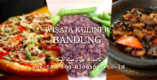
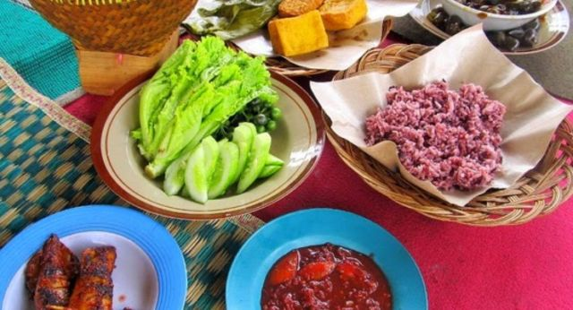
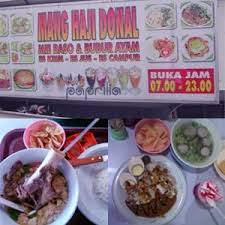

Artikel > Beranda
Sejarah FansaCulinary
FansaCulinary
FansaCulinary berdiri pada bulan April 2019 atas dasar program BE KRAF untuk menyalurkan ilmu coding kepada masyarakat indonesia, FansaCulinary adalah sebuah website dimana kita dapat menemukan informasi mengenai makanan, kuliner yang sedang trend saat ini, berikut tampilan makanan yg sedang menjadi trend saat ini.
Saat ke BANDUNG, jangan lupa cicipi kuliner malam di bandung!!!
1. Nasi merah "punclut"
Nama punclut berasal dari singkatan kata puncak ciumbuleuit. Di sini kamu dapat menikmati berbagai macam makanan lezat, seperti ayam, udang goreng, cumi, dan aneka jenis sambal. Yang paling unik di kuliner malam Nasi Punclut, yaitu tersedia nasi merah sebagai varian menu yang ditawarkan. Sembari menikmati kuliner malam Nasi Punclut, kamu juga akan dimanjakan dengan perkampungan keindahan kota Bandung dari ketinggian. Kota Bandung tentu akan semakin terlihat indah apabila kamu nikmati dari ketinggian. Masalah harga, kamu tidak perlu khawatir, harga untuk menikmati kuliner Nasi Punclut ini terjangkau untuk wisatawan dengan budged pas-pasan.
2. Baso nikmat di "bandung selatan"
Anda penggemar baso, dan anda ingin menikmati sajian baso nikmat, di bandung selatan memiliki kuliner baso nikmat yaitu kuliner baso mang donal yang terletak di Jl. Raya Katapang No.215 Soreang, Kabupaten Bandung, Jawa Barat. jika anda ingin kesana anda dapat melalui arah lanud sulaiman ke arah katapang, setelah jembatan citarum daerah Katapang/cilampeni.